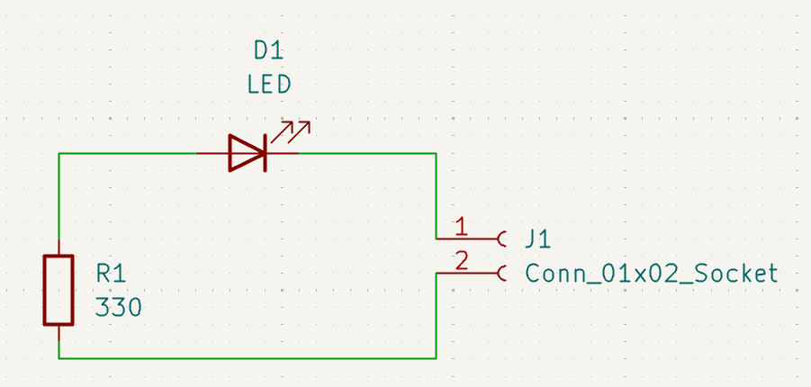

It's arguable to say that one of the final steps in a hands-on ECE project is creating a PCB of your circuit! PCB stands for printed circuit board, and it's an electronic assembly of a circuit, allowing you to make a circuit more compact, permanent, and easily mass-producable!
Normally, after the breadboarding phase, you'll want to move onto the PCB design aspect. Here's an example of a bread-boarded coin-flip project (wherein you press a button to simulate two LEDs mimicing heads and tails) moving onto to become a PCB:
PCB design is a valuable industry skill to have, and virtually all mainstream electronic devices have a PCB! For example, look at down at your computer keyboard—that's a PCB!
This introduction to PCB design will cover using an open-source EDA tool known as KiCad! Below are three different tutorials, where you can click any box to go straight to a tutorial depending on your familiarity with PCB Design and KiCad.
Let's first get started downloading the program. Click this link to download KiCad, making sure you select your specific operating system, and to download the latest GitHub version: https://www.kicad.org/download/
After you've downloaded it open up KiCad, and let's start creating your first PCB! For reference, we'll be covering how to create a PCB of this simple LED circuit.
Below you'll find a series of videos covering how to create the following circuit, by a previous ECE 05 tutor, Jay Paek, so if you feel more comfortable with following a video tutorial, feel free to do so! If not, a textual and image descriptive tutorial can be found after. Both tutorials will cover the same topics.
Video #1 (Left) + Video #2 (Right):
Video #3 (Left) + Video #4 (Right):
Step 1: Creating a New Project
Click on the notebook icon with a sun to create a New Project, and name the project SimpleLED, since that's the circuit we will be designing today! If you've done everything right so far, you should see the image below on the right.
Step 2: Opening the Schematic + Familiarizing
Click on the SimpleLED.kicad_sch to open up the schematic file of our circuit. This is where we'll be creating the circuit for our LED PCB. If you've done everything right so far, you should see the image below on the right.
On the right of your schematic tab, you'll see a bunch of icons that are your main tools for creating a circuit! Feel free to hover your mouse over each icon to see the name and a keyboard shortcut of each tool.
Step 3: Laying Down The Components
Before we start fully wiring our circuit together, let's place down the components that we'll be using first. On the right side of your schematic tab, click on the icon that looks like a triangle, with a plus and minus inside, to open up the Place Symbols tool, or alternatively, you can use the keyboard shortcut and click "A" on your keyboard. You should see a window pop up labeled "Choose Symbols." Refer to the images below for an image demonstration to make sure you are on the right track.
The 3 components we will be using are a Resistor, LED, and 1x2 Header (Connector) Pins. So, in the "Place Symbols" window type into the search bar, "resistor", "LED", and "conn_01x02_socket" After searching each component, double click and left-click each component anywhere onto the schematic file. Refer to the images below to make sure you have selected the right components.
You may be wondering why we haven't added a battery to our circuit, and instead have replaced it with connector pins! The reason for that is because generally, we do not want to add power sources to the PCB itself, and instead want to have areas where we can attach power supplies to where they need to be in our circuit.
If you want to move a component, click on roughly the middle of it so that the entire component + it's name is highlighted in blue, and then you'll be able to hold-left click while hovering over the component to drag it around. If you want to rotate the component, again, click on roughly the middle of it so that the entire component + it's name is highlighted in blue, and then press "R" on your keyboard. You'll be on the right track if your schematic looks like this so far!
Before we move onto the next step, let's set a resistance value for our resistor! Where there is an "R" right now next to our resistor, left-click it twice to open a window that has "Edit Field Value" at the top. In this window, you'll find a text box that has "Value:" next to it, where there is currently an "R" inside the text box. Change this R to be 330, and then click "Ok", or, press enter on your keyboard. Refer to the images below to see if you are on track.
Step 4: Wiring the Circuit
Let's now start wiring each component together. On the right of the schematic window, click the slanted blue line icon to use the "Draw Wires" tool, or, alternatively you can press "W" on your keyboard which is the keyboard-shortcut.
Then, where the resistor has a circle at the end of it, click on that end to place a wire, and then drag your mouse to the end of the LED that also has a circle! Refer below to an image demonstration of this.
Then, do the same step for the other end of the LED, i.e. where the LED has a circle at the unconnected end, click on that end to place a wire, and then drag your mouse to the end of the 1x02 connector socket that also has a circle! Refer below to an image demonstration of this.
Lastly, do the same step for the other end of the resistor, i.e., where the resistor has a circle at the unconnected end, click on that end to place a wire, and then drag your mouse to the end of the 1x02 connector socket that also has a circle! In the end, your circuit should look something like the image below!

If the labels for the components are in the way, or you want to move them, hold "Shift" on your keyboard, and then left-click whichever labels you would like to move. Another alternative is to hold down left-click, and drag your mouse over to create a box that outlines only the labels. In either way the labels should be highlighted with a blue outline. Now, you will be able to hover over the labels and drag them to wherever you please! Below on the left, you'll find an image of what it looks like to use the drag method, and on the right you'll see how the blue color outline looks when you are successfully moving on the labels.
To check if your circuit is all connected and works as should, head to the top and click on the icon that looks like a list of 3 bullet points with a red checkmark! This is known as the Electrical Rules Checker (ERC), and verifies that our circuit follows design rules and specifications. You'll find that a window pops up, where you can then click "Run ERC" at the bottom. Ensure that no errors pop up before proceeding to the next step! Refer to the images below to verify you are on the correct path.
Step 5: Adding Footprints